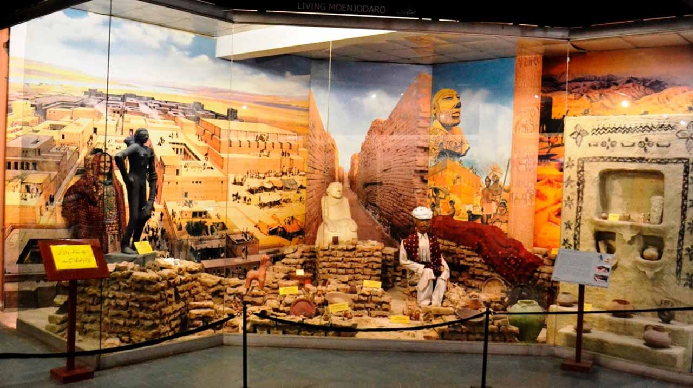

<div class="portfolio-single-load clearfix">
    <div class="custom-full-width-box">
        <div class="custom-container">
            <div class="custom-row align-items-center">
                <div class="custom-image-column">
                    
                </div>
                <div class="custom-text-column">
                    <h2 class="custom-heading">Lok Virsa Museum</h2>
                    <p class="custom-paragraph">
                        Step into Pakistan's cultural tapestry at the Lok Virsa Museum, established in 1974 to celebrate the country's diverse heritage. Located in Islamabad's Shakarparian Park, the museum showcases traditional crafts, costumes, musical instruments, and folk art from all regions of Pakistan. With over 25,000 artifacts on display, the museum offers visitors a fascinating journey through the country's cultural landscape, highlighting its rich traditions, customs, and craftsmanship.

                    </p>
                </div>
            </div>
        </div>
    </div><!-- .custom-full-width-box end -->

</div><!-- end single-project -->
